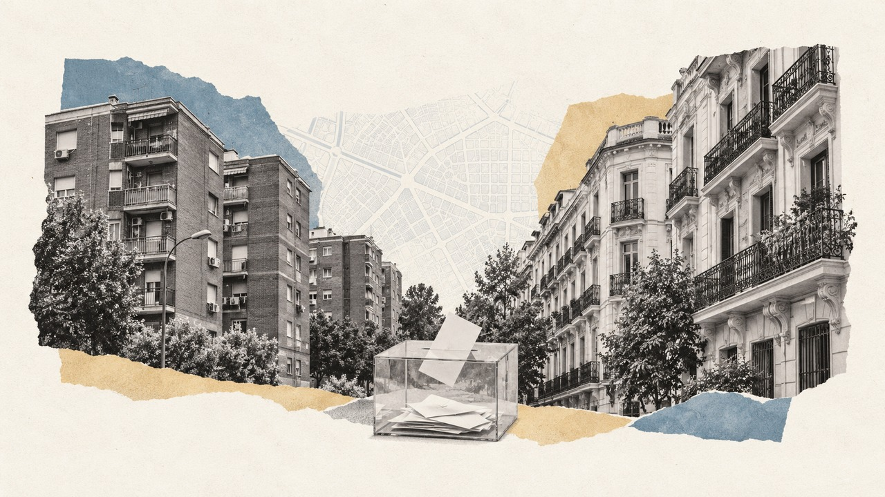

Inicio › Municipios › Madrid › Madrid
Barrio de Madrid · distrito San Blas - Canillejas · Generales 2004-2023
Elecciones en Canillejas
Cómo vota este barrio de Madrid, quién vive en él y en qué se separa del resto de la ciudad
Por Nacho G. del Álamo · Actualizado el

DatoEn Canillejas, en el distrito de San Blas - Canillejas, el PP fue la fuerza más votada en las elecciones generales del 23 de julio de 2023, con el 38,5 % del voto válido, por delante del PSOE (31,4 %). Votó el 69,2 % de sus 20.357 electores, 4,2 puntos menos que el conjunto de Madrid (73,4 %): es el 91.º de los 127 barrios de la ciudad con más participación.
¿Y en tu calle? Busca tu dirección y mira qué votó tu sección censal en cada elección desde 2004.
Encuesta del 29N · Madrid¿Quién ganaría en Madrid? Mira cómo se reparten sus 38 diputados según la media de encuestas →Canillejas (San Blas - Canillejas) vota en la circunscripción de Madrid. La media se actualiza con cada encuesta nueva.Dónde votar en Canillejas (San Blas - Canillejas) el 29N
- Tu colegio y tu mesa vienen en la tarjeta censal, que la Oficina del Censo Electoral envía del 2 al 10 de noviembre. Sin esperarla, se consultan en la sede electrónica del INE (con la provincia, el municipio y la primera letra del primer apellido, o con Cl@ve) o en el teléfono gratuito 900 343 232. Con tu sección, mira cómo votó en 2023.
- Horario: el domingo 29 de noviembre, de 9.00 a 20.00.
- Qué llevar: el DNI, el pasaporte o el permiso de conducir, con fotografía y en original. La tarjeta censal no es obligatoria.
- Si no puedes ir: el voto por correo se pide en Correos hasta el 19 de noviembre y se envía hasta el 25; en 2023 lo pidieron 12,9 de cada 100 electores de la Comunidad de Madrid (provincia a provincia).
- En Canillejas (San Blas - Canillejas): 20.357 electores en las generales de 2023, en 20 secciones censales.
Fuentes: INE, plazos de interés para los electores; LOREG, artículos 84 y 85; censo de consulta del INE de 2026 y resultados por mesa de Interior de 2023.
Guía completa para votar el 29N · Si te ha tocado mesa · Voto por correo
¿Te ha tocado mesa en Canillejas (San Blas - Canillejas)?
- La notificación llega en los tres días siguientes al sorteo, que los ayuntamientos hicieron entre el 31 de octubre y el 4 de noviembre. Desde que la recibes tienes siete días para alegar una causa justificada ante la Junta Electoral de Zona, y los mayores de 65 pueden renunciar en ese plazo (artículos 26 y 27 de la LOREG).
- Excusas que se aceptan siempre, si se acreditan: tener entre 65 y 70 años, una discapacidad declarada, estar de baja médica, estar embarazada de seis meses o más o de permiso por nacimiento, cuidar de un lactante, de menores de 12 años o de un familiar dependiente, o haber estado en una mesa al menos tres veces en diez años, si la mesa queda cubierta. Otras las valora la Junta caso a caso (Instrucción 6/2011 de la JEC).
- Quién puede tocar: cualquier elector de la mesa que sepa leer y escribir y tenga menos de 70 años. El presidente debe tener el título de Bachiller o de FP de segundo grado o, en su defecto, el de Graduado Escolar o equivalente (artículo 26.2).
- El domingo: a las 8.00 en el colegio, una hora antes de abrir, para constituir la mesa; se vota de 9.00 a 20.00 y después se cuenta (artículos 80 y 84).
- Dieta y permisos: 75 euros para presidentes y vocales (CLM24), permiso retribuido de jornada completa el domingo si para ti es día laborable y, en todo caso, cinco horas menos de trabajo el lunes (artículo 28 de la LOREG).
- Si no vas: es obligatorio salvo excusa aceptada; no presentarse puede castigarse con prisión de tres meses a un año o multa (artículo 143).
- En Canillejas (San Blas - Canillejas): 20.357 electores en las generales de 2023, en 20 secciones censales.
Todo sobre la mesa electoral del 29N: excusas aceptadas, qué se hace en la mesa y cómo se cobra.
DatoDonde más se separa Canillejas del resto de Madrid es en el voto del PSOE: 31,4 %, frente al 27,3 % de la ciudad, 4,1 puntos más.
DatoViven en Canillejas 29.153 personas (padrón de 2023), con una edad media de 45,4 años (43,9 en Madrid). El 20,0 % tiene nacionalidad extranjera, frente al 17,4 % de la ciudad. Según el censo de 2021, el 31,3 % de los adultos tiene estudios superiores (45,0 % en la ciudad) y la tasa de paro era del 13,9 % (12,5 %).
DatoLa renta neta media por unidad de consumo es de 22.143 € al año (28.749 € en Madrid): el 87.º barrio con más renta de los 127 de la ciudad. El 22,2 % de la población vive por debajo del umbral de pobreza relativa (menos del 60 % de la renta mediana).
Ver Canillejas calle a calle en el mapa de Madrid
Sección a sección
DatoCanillejas tiene 20 secciones censales, la unidad más pequeña con resultados electorales (entre 500 y 2.500 electores cada una). En 2023 ganó el PP, en 13; el PSOE, en 7.
PP PSOE
DatoDentro del barrio también hay distancia: en la sección que más votó (distrito 20, sección 101) participó el 79,0 %, y en la que menos (distrito 20, sección 75), el 59,1 %. La primera tiene una renta de 30.536 € por unidad de consumo; la segunda, de 16.671 €.
Las 20 secciones de Canillejas, una a una
| Sección | Censo | Participación | Más votado | Renta |
|---|---|---|---|---|
| Distrito 20, sección 72 | 1.272 | 75,4 % | ■ PP (39,9 %) | 26.909 € |
| Distrito 20, sección 73 | 643 | 64,2 % | ■ PSOE (40,4 %) | 16.445 € |
| Distrito 20, sección 74 | 633 | 66,5 % | ■ PP (33,5 %) | 18.638 € |
| Distrito 20, sección 75 | 648 | 59,1 % | ■ PSOE (36,8 %) | 16.671 € |
| Distrito 20, sección 76 | 913 | 69,8 % | ■ PSOE (35,3 %) | 18.420 € |
| Distrito 20, sección 77 | 1.684 | 70,3 % | ■ PP (44,8 %) | 24.458 € |
| Distrito 20, sección 78 | 1.011 | 69,3 % | ■ PSOE (34,4 %) | 20.098 € |
| Distrito 20, sección 79 | 850 | 59,2 % | ■ PSOE (43,8 %) | 17.257 € |
| Distrito 20, sección 80 | 964 | 63,9 % | ■ PSOE (42,1 %) | 19.586 € |
| Distrito 20, sección 82 | 1.344 | 66,7 % | ■ PP (35,4 %) | 20.544 € |
| Distrito 20, sección 83 | 642 | 65,4 % | ■ PP (44,4 %) | 21.440 € |
| Distrito 20, sección 85 | 1.318 | 71,4 % | ■ PP (41,9 %) | 24.217 € |
| Distrito 20, sección 86 | 1.142 | 70,6 % | ■ PP (38,8 %) | 20.700 € |
| Distrito 20, sección 87 | 769 | 65,8 % | ■ PP (37,1 %) | 18.933 € |
| Distrito 20, sección 88 | 1.435 | 69,5 % | ■ PP (40,1 %) | 21.153 € |
| Distrito 20, sección 90 | 983 | 76,5 % | ■ PP (46,4 %) | 28.061 € |
| Distrito 20, sección 91 | 911 | 62,1 % | ■ PSOE (35,2 %) | 18.119 € |
| Distrito 20, sección 92 | 1.178 | 68,6 % | ■ PP (37,9 %) | 21.328 € |
| Distrito 20, sección 93 | 933 | 78,0 % | ■ PP (50,6 %) | 33.309 € |
| Distrito 20, sección 101 | 1.084 | 79,0 % | ■ PP (52,3 %) | 30.536 € |
Resultado de las generales de 2023
DatoVoto por partido sobre voto válido (candidaturas más blancos) en las 20 secciones de Canillejas. La línea discontinua marca el resultado del conjunto de Madrid.
| Partido | Voto | Votos | Madrid |
|---|---|---|---|
| PP | 38,5 % | 5.374 | 41,8 % |
| PSOE | 31,4 % | 4.384 | 27,3 % |
| Sumar / Podemos / IU | 15,9 % | 2.216 | 16,5 % |
| Vox | 12,2 % | 1.699 | 12,4 % |
| Otros | 1,4 % | 189 | 1,2 % |
| En blanco | 0,7 % | 98 | 0,8 % |
De 2004 a 2023
DatoDesde 2004, el barrio ha cambiado de partido más votado 3 veces: el PP ganó en 5, el PSOE ganó en 3 de 8 elecciones. La participación ha pasado del 79,5 % en 2004 al 69,2 % en 2023.
| Elección | Participación | Más votado | PP | PSOE | Vox | Sumar / Podemos / IU | Ciudadanos | UPyD |
|---|---|---|---|---|---|---|---|---|
| 2004 | 79,5 % | PSOE | 40,5 % | 48,3 % | — | 6,8 % | — | — |
| 2008 | 79,4 % | PP | 45,3 % | 44,1 % | — | 4,7 % | 0,1 % | 3,4 % |
| 2011 | 74,8 % | PP | 47,8 % | 29,3 % | — | 8,6 % | — | 10,2 % |
| 2015 | 75,2 % | PP | 31,9 % | 20,5 % | 0,5 % | 27,8 % | 16,0 % | 1,2 % |
| 2016 | 71,4 % | PP | 35,8 % | 22,8 % | 0,5 % | 22,8 % | 15,4 % | 0,3 % |
| abr. 2019 | 76,5 % | PSOE | 18,9 % | 29,9 % | 11,1 % | 17,4 % | 19,4 % | — |
| nov. 2019 | 70,3 % | PSOE | 24,4 % | 30,1 % | 15,2 % | 19,7 % | 8,3 % | — |
| 2023 | 69,2 % | PP | 38,5 % | 31,4 % | 12,2 % | 15,9 % | — | — |
Con las secciones censales de 2023: los resultados de cada elección son los de las secciones que ya existían con el mismo código. Las familias agrupan a cada partido con sus antecesores y coaliciones (Podemos, IU y Sumar; Junts y CiU). «Sumar / Podemos / IU» suma dos listas que se presentaron por separado (en 2015, Podemos y IU-Unidad Popular; en nov. 2019, Unidas Podemos y Más País); el más votado se calcula lista a lista.
Quién vive en el barrio
| Canillejas | Madrid | |
|---|---|---|
| Habitantes (2023) | 29.153 | 3.362.335 |
| Edad media | 45,4 | 43,9 |
| Menores de 18 años | 14,0 % | 14,8 % |
| 65 años o más | 23,4 % | 20,2 % |
| Nacionalidad extranjera | 20,0 % | 17,4 % |
| Nacidos fuera de España (2021) | 25,1 % | 23,7 % |
| Con estudios superiores (2021) | 31,3 % | 45,0 % |
| Tasa de paro (2021) | 13,9 % | 12,5 % |
| Renta neta por unidad de consumo | 22.143 € | 28.749 € |
| Renta neta por habitante | 15.070 € | 19.428 € |
| Bajo el umbral de pobreza relativa | 22,2 % | 18,4 % |
Medias de las secciones del barrio ponderadas por su población. Padrón y Atlas de Distribución de Renta de los Hogares del INE (2023); estudios, paro y lugar de nacimiento, del censo de población de 2021. La relación entre estas cifras y el voto es entre barrios, no entre personas.
Otros barrios del distrito de San Blas - Canillejas
- Rosas: el PP, participación del 79,3 %
- Simancas: el PP, participación del 66,8 %
- Arcos: el PSOE, participación del 68,5 %
- Rejas: el PP, participación del 73,3 %
- Salvador: el PP, participación del 79,9 %
- Hellín: el PSOE, participación del 64,1 %
- Amposta: el PSOE, participación del 57,8 %
Más datos
- Todos los barrios de Madrid
- Barrios de las grandes ciudades de España
- Elecciones en Madrid, desde 1977
- Participación electoral por barrio en toda España
- Voto y renta por barrios en toda España
Preguntas frecuentes
¿Dónde voto en Canillejas (San Blas - Canillejas) el 29N?
En el colegio y la mesa que indica la tarjeta censal, que la Oficina del Censo Electoral envía del 2 al 10 de noviembre (INE). También se puede consultar en la sede electrónica del INE o en el teléfono gratuito 900 343 232.
¿Cuánto se cobra por estar en una mesa electoral en Canillejas (San Blas - Canillejas)?
Lo mismo que en toda España: 75 euros para el presidente y los vocales, cinco más que en 2023, según la Orden INT/650/2026 (CLM24, Última Hora). Además, permiso retribuido de jornada completa el domingo si para ti es día laborable y, en todo caso, cinco horas menos de trabajo el lunes (artículo 28 de la LOREG).
¿Qué excusas valen para no ir a la mesa en Canillejas (San Blas - Canillejas)?
Las mismas en todas partes. Siempre se aceptan, si se acreditan, tener entre 65 y 70 años, una discapacidad declarada, estar de baja médica, estar embarazada de seis meses o más o de permiso por nacimiento, cuidar de un lactante, de menores de 12 años o de un familiar dependiente, o haber estado en una mesa al menos tres veces en los últimos diez años. Otras las valora la Junta Electoral de Zona caso a caso (Instrucción 6/2011 de la Junta Electoral Central). Hay siete días desde la notificación para alegarlas; todo, en la mesa electoral del 29N.
¿Cómo se vota por correo en Canillejas (San Blas - Canillejas) el 29N?
Se pide en cualquier oficina de Correos o en su web hasta el 19 de noviembre; la documentación llega del 9 al 22 y el voto se envía hasta el 25 (INE). En 2023 lo pidieron 12,9 de cada 100 electores de la Comunidad de Madrid, según la Oficina del Censo Electoral (el voto por correo, provincia a provincia). Todos los pasos, en el voto por correo del 29N.
Método y fuentes
- Qué es el barrio
- Los límites de barrios y distritos son los de OpenStreetMap (© colaboradores de OpenStreetMap, licencia ODbL), que en la mayoría de ciudades copian la división oficial del ayuntamiento. Cada sección censal del INE se asigna al barrio con el que comparte más superficie; las que caen menos de la mitad dentro de un barrio no se asignan. Como las secciones no siempre siguen los límites de los barrios, alguna manzana del borde puede quedar en el barrio vecino.
- Datos
- Resultados oficiales por mesa del Ministerio del Interior (Infoelectoral) agregados por sección censal, sin el voto de los residentes en el extranjero (CERA). Renta y población: Atlas de Distribución de Renta de los Hogares y padrón del INE (2023); estudios, paro y lugar de nacimiento: censo de población de 2021.
- Cómo se calcula
- Porcentajes sobre voto válido (candidaturas más votos en blanco), sumando votos de las secciones, no promediando porcentajes. Participación: votantes entre censo. Agrupación de partidos y límites: metodología del mapa.
- Datos abiertos
- Las cifras salen de las descargas del mapa (CSV, licencia CC BY 4.0); la relación entre secciones y barrios está en data/barrios/secciones_barrio.csv.
- Autoría y revisión
- Nacho G. del Álamo. Publicado el 22 de octubre de 2026; actualizado el 9 de noviembre de 2026. Política editorial · Correcciones